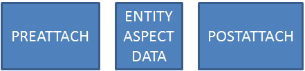

Обзор
RMI либо отправляются функцией InvokeRMIили, если RMI зависит от другого объекта, с помощью функции InvokeRMIWithDependentObject. InvokeRMIWithDependentObject используется для задержки RMI до тех пор, пока зависимый объект не станет известен или не обновится до определенного состояния на целевой машине.
Например, если создается новый объект и вызывается RMI для другого объекта с этим новым объектом ID в качестве параметра, сетевая система будет ждать, пока удаленный компьютер не узнает о новом объекте, а затем отправит RMI.
Заказ
Доступные флаги
В файле IGameObject.h, существуют макросы для объявления классов RMI (например. DECLARE_SERVER_RMI_...). Существуют следующие различные типы объявлений:
- PREATTACH: RMI прикрепляется вверху обновления данных для объекта. Это можно * использовать для подготовки удаленного объекта к приему новых данных.
- POSTATTACH: RMI прикрепляется внизу обновления данных, поэтому он будет вызываться после сериализации данных. Это можно использовать, чтобы что-то сделать с новыми данными.
- NOATTACH: RMI не привязан ни к какому обновлению данных и поэтому не может на него полагаться. Может использоваться для вызовов, которые не полагаются на данные. Рекомендуется отдать предпочтение NOATTACH RMI, поскольку их гораздо проще планировать из-за меньшей задержки.
- FAST: RMI передается немедленно, не дожидаясь обновления кадра. Рекомендуется избегать этого флага, поскольку он использует много CPU для снижения задержки.
Чтобы пересылать RMI только определенным клиентам, InvokeRMI можно вызвать с флагом ERMInvoction::eRMI_ToClientChannel.
Правила оформления заказа
Порядок RMI применим только в пределах набора типов объектов и вложений.
Например:
- PLAYER RMI 1
- PLAYER RMI 2
- ITEM RMI 1
- PLAYER RMI 3
Предполагая, что все упорядочены, гарантируется, что PLAYER RMI 1-3 прибудет в таком порядке, но ITEM RMI 1 может прибыть до или после PLAYER RMI.
Дальше дело обстоит сложнее PREATTACH, NOATTACH и POSTATTACH.
- Все PREATTACH сообщения упорядочены внутри себя. Как и NOATTACH и POSTATTACH.
- NOATTACH может упасть по обе стороны нижнего уровня, но никогда между ними.

Вызов функции RMI
Следующие функции в CGameObject интерфейс должен использоваться для вызова вызова RMI.
void InvokeRMI( const MI method, const T& params, unsigned where, int channel = -1 );
void InvokeRMIWithDependentObject( const MI method, const T& params, unsigned where, EntityId ent, int channel = -1 );
InvokeRMIWithDependentObject() функция будет гарантировать, что данный объект существует на другом конце. Его можно использовать для сообщений, включающих несколько объектов (например, вызвать игрока RMI, чтобы он взял предмет).
Параметрwhere должен быть одним из следующих флагов.
Серверные RMI
- eRMI_ToClientChannel: укажите канал назначения как flag_specific_param.
- eRMI_ToOtherClients: укажите клиента, которого следует игнорировать, как flag_specific_param.
- eRMI_ToAllClients:
- eRMI_ToRemoteClients: будет игнорировать локальный клиент
CLIENT RMI
- eRMI_ToServer
Примеры
Чтобы определить функцию, которая будет реализована как RMI, IMPLEMENT_RMI #определить из IGameObject.h следует использовать.
#define IMPLEMENT_RMI(cls, name)
В следующем примере реализуется новая функция ClEMP в классе CPlayer:
IMPLEMENT_RMI(CPlayer, ClEMP)
{
SNanoSuitEvent suitEvent;
suitEvent.event = eNanoSuitEvent_EMP_DISCHARGE;
suitEvent.fParam = params.time; // params == EMPParams
this->SendActorSuitEvent(suitEvent);
return true; // Always return true - false will drop connection
}
Следующая строка вызовет функцию:
pPlayer->GetGameObject()->InvokeRMI(CPlayer::ClEMP(), CPlayer::EMPParams(time), eRMI_ToClientChannel, pPlayer->GetChannelId());